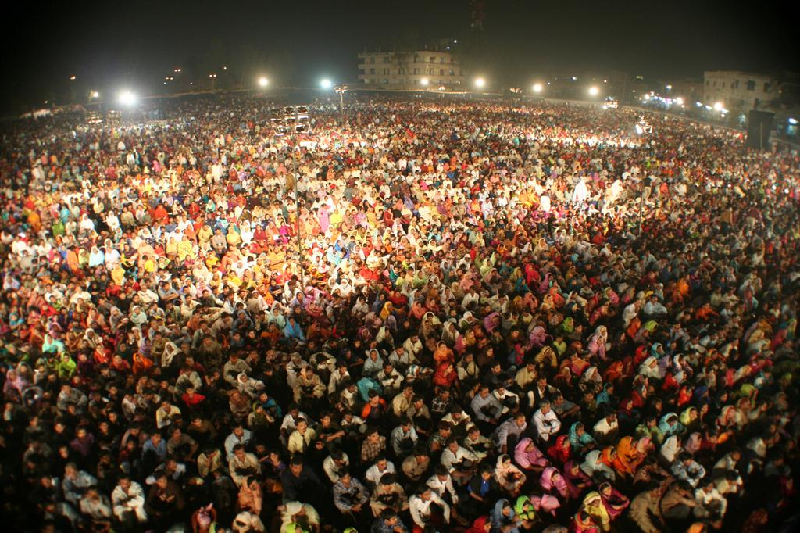
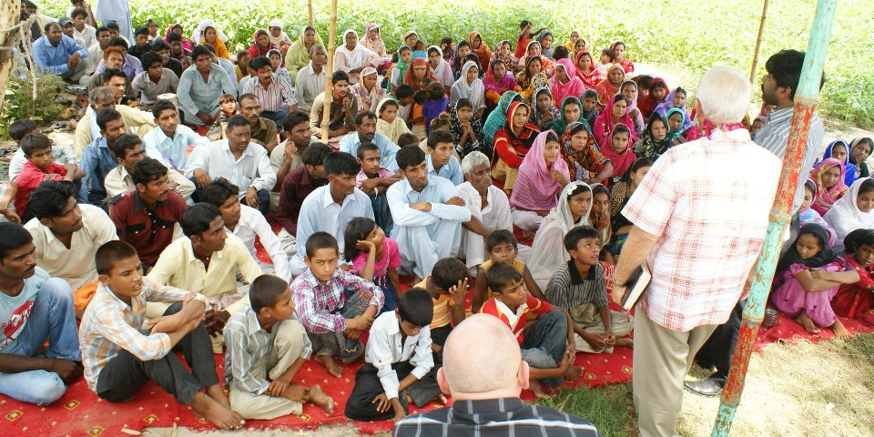
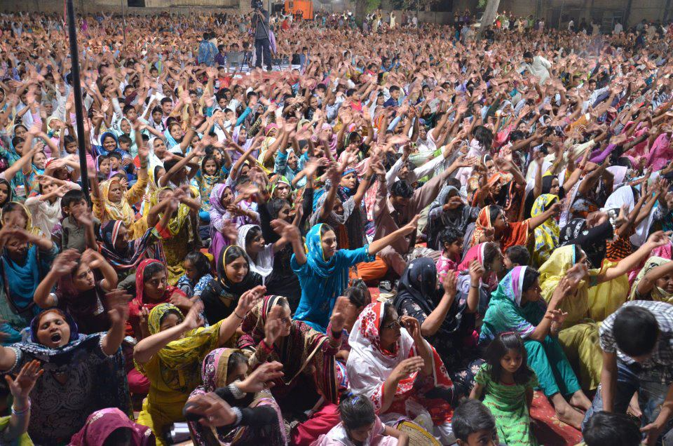

SHARING SMILES
HOPE BEHIND EVERY SMILE
HOPE BEHIND EVERY SMILE
Gospel Outreach
Sharing Smiles Pakistan is committed to taking the Gospel to villages, towns, and communities where many have never heard the message of Jesus Christ. Through evangelistic outreaches, Gospel campaigns, children's programs, and indigenous missionaries, we are reaching thousands with the hope of salvation.
Ministry Moments




Why Evangelism?
Pakistan is home to millions of people who have never personally heard the Gospel. Many communities remain unreached and have little access to Christian witness, Bibles, or local churches.
Through evangelism, we seek to share the love of Christ, introduce people to the Gospel, and connect new believers to discipleship and local church communities.
How We Evangelize
Large gatherings where the Gospel is preached and people are invited to respond to Christ.
Visiting remote villages and communities with the message of hope.
Sharing God's love with children through Bible stories, activities, and special programs.
Equipping missionaries and pastors to share Christ one person at a time.
Gospel Campaigns
Through Gospel Festivals, we bring the message of Jesus Christ directly to communities across Pakistan. These gatherings create opportunities for people to hear the Gospel through worship, powerful testimonies, prayer, and biblical preaching. Many have found hope, experienced God's love, and taken their first steps toward a life-changing relationship with Christ.
Our outreach events often reach people who have never heard a clear presentation of the Gospel before. As hearts are touched by the message of salvation, lives are transformed, families are strengthened, and new believers are connected to local churches where they can continue growing in their faith.

Indigenous Missionaries
One of our greatest strengths is our network of indigenous missionaries who understand the language, culture, and needs of the communities they serve.
Through their faithful ministry, the Gospel is reaching places that are often overlooked and difficult to access.
Romans 10:15
Your partnership enables Gospel campaigns, village outreaches, missionary support, discipleship programs, and Bible distribution across Pakistan.
Together we can bring the hope of Jesus Christ to those who have never heard His name.